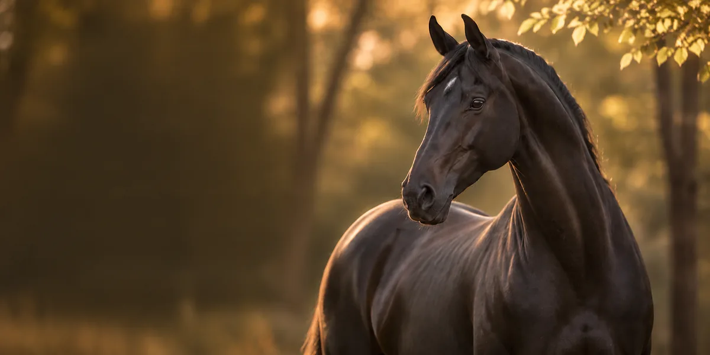
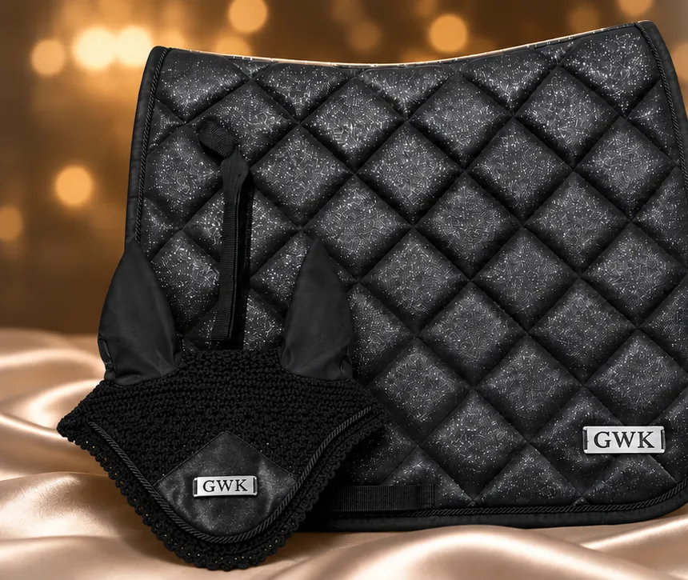
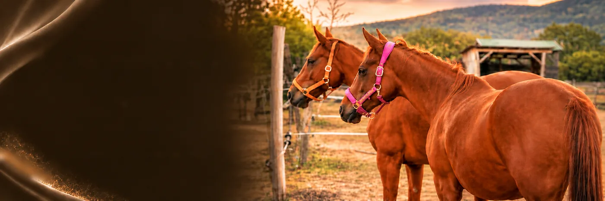

Új kollekció
Evening Star
Csillogó részletek, prémium anyagok és időtlen elegancia.
- Fekete
- Fehér
- Rózsaszín

A GWK Horse története
Egy örökség,ami összeköt a múlttal,és inspirálja a GWK Horse-t.
Ismerd meg a történetünketPrémiumminőség
Kényelem& teljesítmény
Időtállódesign
Lovasoknakszeretettel